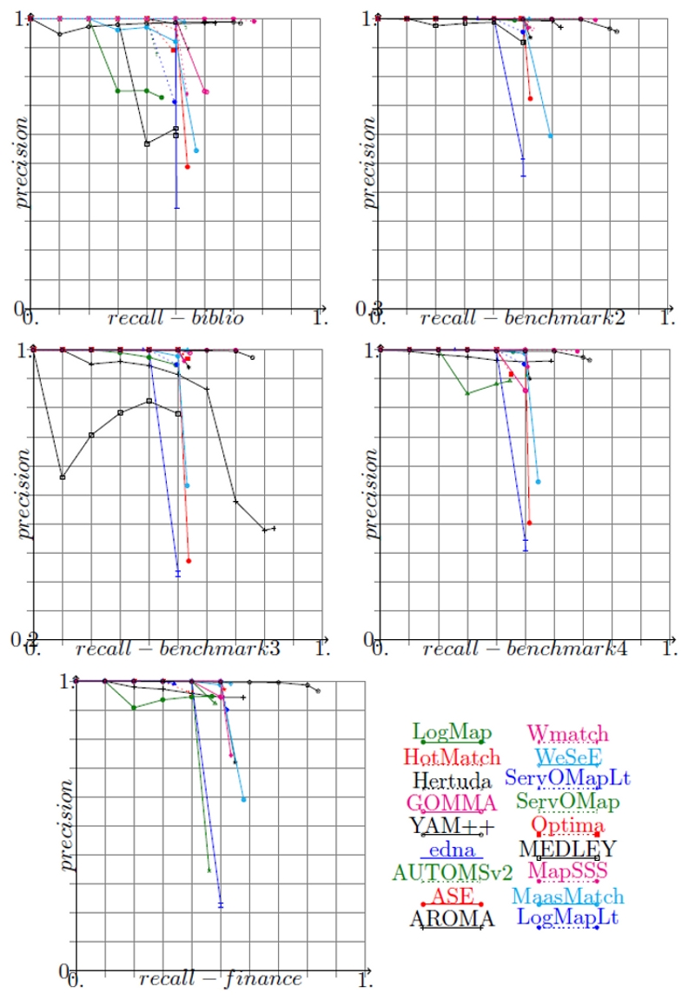
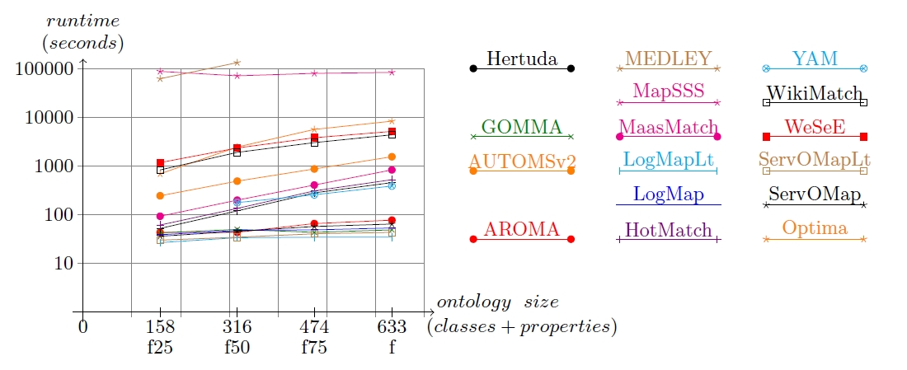
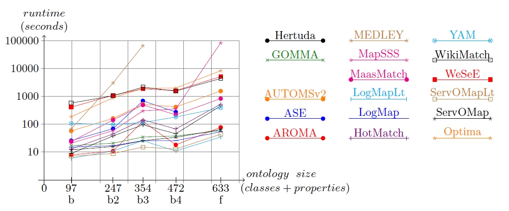

In the following we present the results of the OAEI 2012 evaluation of the benchmarks track. If you notice any kind of error, do not hesitate to contact Jérôme Euzenat (see mail below).
The focus of this campaign was on scalability, i.e. the ability of matchers to deal with data sets of increasing number of elements. To that extent, we have generated five different benchmarks against which matchers have been evaluated: benchmark1 (biblio), benchmark2, benchmark3, benchmark4 and benchmark5 (finance). New benchmarks were generated following the same model of previous benchmarks, from seed ontologies from different domains and with different sizes.
The following table summarizes the information about ontologies' sizes.
| Test set | biblio | benchmark2 (commerce) | benchmark3 (bioinformatics) | benchmark4 (product design) | finance |
| ontology size | |||||
| classes+prop | 97 | 247 | 354 | 472 | 633 |
| instances | 112 | 35 | 681 | 376 | 1113 |
| entities | 209 | 282 | 1035 | 848 | 1746 |
| triples | 1332 | 1562 | 5387 | 4262 | 21979 |
From the 23 systems listed in the 2012 final results page, 17 systems participated in this track. TOAST was only able to pass the tests of the Anatomy track; OMR follows a very strange strategy, generating alignments with mappings containing non-existing entities in one or both of the ontologies being matched; OntoK revealed several bugs when preliminary tests were executed, and developers were not able to fix all of them; requirements for executing CODI in our machines were not met due to academic license problems. For those reasons, these tools were not evaluated. Of course, we did not consider systems participating only in the Instance Matching track.
As we stated before, the focus of this campaign was on scalability. We have addressed this from two aspects:
For each aspect all systems have been executed in the same conditions whose specifications are given below.
We have executed all systems on two two cores and 8GB RAM Debian virtual machines (VM) running continuously in parallel, except for the finance benchmark which required 10GB RAM for some systems. We follow the general recommendations for Linux operating systems allocating no more than 80% of available memory for running Java processes. 6GB RAM were allocated to Java processes running in 8GB RAM VMs; 8GB RAM were allocated to Java processes running in 10GB RAM Vms.
For each benchmark seed ontology, a data set of 94 tests was automatically generated. From the whole systematic benchmark test set (111 tests), we excluded the tests that were not artificially generated: 102--104, 203--210, 230--231, 301--304. Runs for benchmarks 2, 3 and 4 were executed in blind mode. Just one run was done for each benchmark, because it was confirmed in previous campaigns, that even if some matchers exhibit non deterministic behavior on a test case basis, their average measures on the whole data set remains almost the same across different runs. The data sets used for biblio and finance benchmarks are available here.
The following table presents the harmonic means of precision, F-measure and recall for the five benchmark data sets for all the participants, along with their confidence-weighted values. The table also shows measures provided by edna, a simple edit distance algorithm on labels which is used as a baseline. ASE was not able to handle the finance data set, and MEDLEY did not completed the evaluation of benchmark4 and finance data sets in a reasonable amount of time (less than 12 hours). The MapSSS results presented for finance are those obtained for the OAEI2011.5 campaign where we did not put any time limitation. The alignments produced by the tools for biblio and finance are available here.
| Matching system | biblio | benchmark2 | benchmark3 | benchmark4 | finance | ||||||||||
| Precision | F-measure | Recall | Precision | F-measure | Recall | Precision | F-measure | Recall | Precision | F-measure | Recall | Precision | F-measure | Recall | |
| edna | 0.35(0.45) | 0.41(0.47) | 0.5 | 0.46(0.61) | 0.48(0.55) | 0.5 | 0.22(0.25) | 0.3(0.33) | 0.5 | 0.31(0.37) | 0.38(0.42) | 0.5 | 0.22(0.25) | 0.3(0.33) | 0.5 |
| AROMA | 0.98(0.99) | 0.77(0.73) | 0.64(0.58) | 0.97(0.98) | 0.76(0.73) | 0.63(0.58) | 0.38(0.43) | 0.53(0.54) | 0.83(0.73) | 0.96 | 0.73(0.7) | 0.59(0.55) | 0.94 | 0.72(0.7) | 0.58(0.56) |
| ASE | 0.49 | 0.51(0.52) | 0.54 | 0.72(0.74) | 0.61 | 0.53 | 0.27 | 0.36 | 0.54 | 0.4(0.41) | 0.45 | 0.51 | na | na | na |
| AUTOMSv2 | 0.97 | 0.69 | 0.54 | 0.97 | 0.68 | 0.52 | 0.99(1) | 0.7 | 0.54 | 0.91(0.92) | 0.65 | 0.51(0.5) | 0.35* | 0.42(0.39)* | 0.55(0.46)* |
| GOMMA | 0.69(0.68) | 0.48(0.43) | 0.37(0.31) | 0.99 | 0.6(0.54) | 0.43(0.38) | 0.93(0.94) | 0.64(0.59) | 0.49(0.43) | 0.99 | 0.57(0.51) | 0.4(0.35) | 0.96 | 0.6(0.53) | 0.43(0.37) |
| Hertuda | 0.9 | 0.68 | 0.54 | 0.93 | 0.67 | 0.53 | 0.94 | 0.68 | 0.54 | 0.9 | 0.66 | 0.51 | 0.72 | 0.62 | 0.55 |
| Hotmatch | 0.96 | 0.66 | 0.5 | 0.99 | 0.68 | 0.52 | 0.99 | 0.68 | 0.52 | 0.99 | 0.66 | 0.5 | 0.97 | 0.67 | 0.51 |
| LogMap | 0.73 | 0.56(0.51) | 0.45(0.39) | 1 | 0.64(0.59) | 0.47(0.42) | 0.95(0.96) | 0.65(0.6) | 0.49(0.44) | 0.99(1) | 0.63(0.58) | 0.46(0.41) | 0.95(0.94) | 0.63(0.57) | 0.47(0.4) |
| LogMapLt | 0.71 | 0.59 | 0.5 | 0.95 | 0.66 | 0.5 | 0.95 | 0.65 | 0.5 | 0.95 | 0.65 | 0.5 | 0.9 | 0.66 | 0.52 |
| MaasMtch | 0.54(0.9) | 0.56(0.63) | 0.57(0.49) | 0.6(0.93) | 0.6(0.65) | 0.6(0.5) | 0.53(0.9) | 0.53(0.63) | 0.53(0.48) | 0.54(0.92) | 0.54(0.64) | 0.54(0.49) | 0.59(0.92) | 0.59(0.63) | 0.58(0.48) |
| MapSSS | 0.99 | 0.87 | 0.77 | 1 | 0.86 | 0.75 | 1 | 0.82 | 0.7 | 1 | 0.81 | 0.68 | 0.99 | 0.83 | 0.71 |
| MEDLEY | 0.6(0.59) | 0.54(0.53) | 0.5(0.48) | 0.92(0.94) | 0.65(0.63) | 0.5(0.48) | 0.78 | 0.61(0.56) | 0.5(0.43) | to | to | to | to | to | to |
| Optima | 0.89 | 0.63 | 0.49 | 1 | 0.66 | 0.5 | 0.97 | 0.69 | 0.53 | 0.92 | 0.6 | 0.45 | 0.96 | 0.56 | 0.4 |
| ServOMap | 0.88 | 0.58 | 0.43 | 1 | 0.67 | 0.5 | 1 | 0.67 | 0.5 | 0.89 | 0.6(0.59) | 0.45(0.44) | 0.92 | 0.63 | 0.48 |
| ServOMapLt | 1 | 0.33 | 0.2 | 1 | 0.51 | 0.34 | 1 | 0.55 | 0.38 | 1 | 0.41 | 0.26 | 0.99 | 0.51 | 0.34 |
| WeSeE | 0.99 | 0.69(0.68) | 0.53(0.52) | 1 | 0.69(0.68) | 0.52 | 1 | 0.7(0.69) | 0.53 | 1 | 0.66 | 0.5 | 0.99 | 0.7(0.69) | 0.54(0.53) |
| Wikimatch | 0.74 | 0.62 | 0.54 | 0.97 | 0.67(0.68) | 0.52 | 0.96(0.97) | 0.68 | 0.52 | 0.94(0.95) | 0.66 | 0.51 | 0.74(0.75) | 0.62(0.63) | 0.54 |
| YAM++ | 0.98(0.95) | 0.83(0.18) | 0.72(0.1) | 0.96(1) | 0.89(0.72) | 0.82(0.56) | 0.97(1) | 0.85(0.7) | 0.76(0.54) | 0.96(1) | 0.83(0.7) | 0.72(0.54) | 0.97(1) | 0.9(0.72) | 0.84(0.57) |
n/a: not able to run this benchmark
to: timeout exceeded
*: uncompleted results
The table shows that with few exceptions, all systems achieve higher levels of precision than recall for all benchmarks. The exceptions are the baseline; AROMA for benchmark3; ASE for biblio, benchmark3 and benchmark4; AUTOMSv2 for finance; and MaasMatch which produced very similar values for both measures and for all benchmarks. Considering the baseline as a reference, no tool had a worst precision performance, and only ServOMapLt had a significantly lower recall, with LogMap having slightly lower values for the same measure.
The test-by-test results on which this table is built are given in the following table:
| biblio | weighted |
| benchmark 2 | weighted |
| benchmark 3 | weighted |
| benchmark 4 | weighted |
| Finance | weighted and weighted2 |
Confidence-weighted values have sense only for those tools which generate correspondences with confidence values different from one. These measures reward systems able to provide accurate confidence values, providing significant precision increasing for systems like edna and MaasMatch, which had possibly many incorrect correspondences with low confidence, and significant recall decreasing for AROMA, GO2A, LogMap and YAM++, which had apparently many correct correspondences with low confidence. The variation for YAM++ is quite impressive, specially for the biblio benchmark.
Based on the average F-measure for all benchmarks, which is shown in the next table, we observe that the group of best systems in each data set remains relatively the same across different benchmarks. Even if there is no best system for all benchmarks, YAM++, MapSSS and AROMA seems to generate the best alignments in terms of F-measure.
| Matching system | biblio | benchmark2 | benchmark3 | benchmark4 | finance | Average F-measure |
| YAM++ | 0.83 | 0.89 | 0.85 | 0.83 | 0.9 | 0.86 |
| MapSSS | 0.87 | 0.86 | 0.82 | 0.81 | 0.83 | 0.84 |
| AROMA | 0.77 | 0.76 | 0.53 | 0.73 | 0.72 | 0.70 |
| WeSeE | 0.69 | 0.69 | 0.7 | 0.66 | 0.7 | 0.69 |
| GOMMA | 0.67 | 0.69 | 0.7 | 0.63 | 0.66 | 0.67 |
| HotMatch | 0.66 | 0.68 | 0.68 | 0.66 | 0.67 | 0.67 |
| Hertuda | 0.68 | 0.67 | 0.68 | 0.66 | 0.62 | 0.66 |
| Wikimatch | 0.62 | 0.67 | 0.68 | 0.66 | 0.62 | 0.65 |
| LogMapLt | 0.59 | 0.66 | 0.65 | 0.65 | 0.66 | 0.64 |
| ServOMap | 0.58 | 0.67 | 0.67 | 0.6 | 0.63 | 0.63 |
| Optima | 0.63 | 0.66 | 0.69 | 0.6 | 0.56 | 0.63 |
| AUTOMSv2 | 0.69 | 0.68 | 0.7 | 0.65 | 0.39 | 0.62 |
| LogMap | 0.56 | 0.64 | 0.65 | 0.63 | 0.63 | 0.62 |
| MEDLEY | 0.54 | 0.65 | 0.61 | to | to | 0.60 |
| MaasMatch | 0.56 | 0.6 | 0.53 | 0.54 | 0.59 | 0.56 |
| ASE | 0.51 | 0.61 | 0.36 | 0.45 | na | 0.48 |
| ServOMapLt | 0.33 | 0.51 | 0.55 | 0.41 | 0.51 | 0.46 |
| edna | 0.41 | 0.48 | 0.3 | 0.38 | 0.3 | 0.37 |
na: not able to pass this test
to: timeout exceeded
*: uncompleted results
On the average, all matchers have better performance than the baseline, and they behave relatively stable across all benchmarks. Nevertheless, we observe a high variance in the results of some systems. Outliers are, for instance, a poor precision for AROMA with benchmark3 and a poor recall for ServOMapLt with biblio. These variations might depend on inter-dependencies between matching systems and datasets, and needs additional analysis requiring a deep knowledge of the evaluated systems.
Finally, the next table shows the results of the tools that have participated in the OAEI2011 and/or OAEI2011.5 campaigns. We present only the biblio and finance benchmarks because they were used in those campaigns, and also in OAEI2012. Even if the figures shown in the table were obtained with different data sets generated with the same test generator from the same seed ontologies, the comparison is valid. Previous experiments have shown that the F-measures obtained for data sets generated in those conditions remained pretty much the same [1].
| Matching system | biblio | finance | ||||
| 2011 | 2011.5 | 2012 | 2011 | 2011.5 | 2012 | |
| AROMA | 0.76 | 0.76 | 0.77 | 0.70 | 0.70 | 0.72 |
| AUTOMSv2 | --- | 0.69 | 0.69 | --- | na | 0.39 |
| GOMMA | --- | 0.67 | 0.67 | --- | 0.66 | 0.66 |
| Hertuda | --- | 0.67 | 0.68 | --- | 0.60 | 0.62 |
| LogMap | 0.57 | 0.48 | 0.56 | na | 0.60 | 0.63 |
| LogMapLt | --- | 0.58 | 0.59 | --- | 0.66 | 0.66 |
| MaasMatch | 0.58 | 0.50 | 0.56 | 0.61 | 0.52 | 0.59 |
| MapSSS | 0.84 | 0.86 | 0.87 | to | 0.83 | 0.83 |
| Optima | 0.65 | --- | 0.63 | to | --- | 0.56 |
| WeSeE | --- | 0.67 | 0.69 | --- | 0.69 | 0.70 |
| YAM++ | 0.86 | 0.83 | 0.83 | to | na | 0.90 |
na: not able to pass this test
to: timeout exceeded
Small variations are observed in the table across different campaigns. With respect to biblio, negative variations between 2-4% for some tools and positive variations between 1-3% for others are observed. LogMap and MaasMatch fell more than 10% percent in the OAEI2011.5 campaign, but they recovered well in OAEI2012. For finance, the number of systems that passed the tests increased, either because bugs reported with versions used in previous campaigns were fixed, either because we relaxed the time out constraint imposed for this ontology in OAEI2011. For many tools that passed the tests in previous campaigns, positive variations between 1-3% are observed.
For the systems which have provided their results with confidence measures different from 1 or 0, it is possible to draw precision/recall graphs in order to compare them; these graphs are given in the next figure. The graphs show the real precision at n% recall and they stop when no more correspondences are available; then the end point corresponds to the precision and recall reported in the first table shown above.

Precision/recall graphs for benchmarks. The alignments generated by matchers are cut under a threshold necessary for achieving n% recall and the corresponding precision is computed.
Runtime scalability has been evaluated from two perspectives: on the one hand we considered the five seed ontologies from different domains and with different sizes; on the other hand we considered the finance ontology scaling it by reducing its size by different factors (25%, 50% and 75%). For the two modalities, the data sets were composed of a subset of a whole systematic benchmark; tests have been carefully selected in order to be representative of all the alterations used to build a whole benchmark data set. The tests used were 101, 201-4, 202-4, 221, 228, 233, 248-4, 250-4, 253-4, 254-4, 257-4, 260-4, 261-4, 265, 266.
All the experiments were done on a 3GHz Xeon 5472 (4 cores) machine running Linux Fedora 8 with 8GB RAM. The following tables present the runtime measurement in seconds for the data sets used; systems on the table are ordered by least cumulated time. Semi-log graphs for runtime measurement against benchmark size in terms of classes and properties are given after the tables.
| Matching system | finance25% | finance50% | finance75% | finance | Total time |
| LogMapLt | 27 | 34 | 35 | 35 | 131 |
| ServOMapLt | 30 | 35 | 41 | 44 | 150 |
| GOMMA | 43 | 50 | 44 | 49 | 186 |
| LogMap | 39 | 48 | 49 | 54 | 190 |
| ServOMap | 36 | 46 | 57 | 64 | 203 |
| AROMA | 44 | 44 | 66 | 77 | 231 |
| YAM++ | na | 176 | 256 | 386 | 818 |
| Hertuda | 52 | 119 | 284 | 452 | 907 |
| Hotmatch | 61 | 136 | 309 | 522 | 1028 |
| MaasMatch | 794 | 201 | 407 | 833 | 1535 |
| AUTOMSv2 | 244 | 495 | 869 | 1535 | 3143 |
| Wikimatch | 841 | 1913 | 3001 | 4350 | 10105 |
| WeSeE | 1174 | 2347 | 3780 | 5163 | 12464 |
| Optima | 685 | 2434 | 5588 | 8234 | 16941 |
| MapSSS | 87622 | 71191 | 78578 | 82841 | 320232 |
| MEDLEY | 62246 | 132987 | to | to | 195233 |
| ASE | na | na | na | na |
na: not able to run this benchmark
to: timeout exceeded
| Matching system | biblio | benchmark2 | benchmark3 | benchmark4 | finance | Total time |
| LogMapLt | 6 | 6 | 11 | 11 | 35 | 69 |
| ServOMapLt | 7 | 9 | 15 | 13 | 44 | 88 |
| LogMap | 15 | 17 | 26 | 26 | 54 | 138 |
| ServOMap | 12 | 16 | 26 | 34 | 64 | 152 |
| GOMMA | 17 | 21 | 35 | 38 | 59 | 160 |
| AROMA | 8 | 11 | 127 | 18 | 77 | 241 |
| Hertuda | 9 | 38 | 96 | 46 | 452 | 641 |
| HotMatch | 13 | 45 | 144 | 67 | 522 | 791 |
| YAM++ | 108 | 97 | 115 | 182 | 386 | 888 |
| MaasMatch | 24 | 140 | 487 | 220 | 833 | 1704 |
| AUTOMSv2 | 58 | 161 | 519 | 421 | 1535 | 2694 |
| WikiMatch | 577 | 1059 | 2158 | 1532 | 4350 | 9676 |
| WeSeE | 411 | 1100 | 1878 | 1627 | 5163 | 10179 |
| Optima | 188 | 882 | 1972 | 2001 | 8234 | 13277 |
| MapSSS | 21 | 59 | 299 | 355 | 82841 | 83575 |
| ASE | 26 | 69 | 690 | 276 | na | 1061 |
| MEDLEY | 67 | 2986 | 65810 | to | to | 68863 |
na: not able to run this benchmark
to: timeout exceeded

Runtime measurement VS ontology size (classes+properties) for finance data sets

Runtime measurement VS ontology size (classes+properties) for all benchmarks
Some observations can be done from the graphs:
The results obtained this year allow us to confirm something that was observed in OAEI2011 and OAEI2011.5: we can not conclude on a general correlation between runtime and quality of alignments. Not always the slowest tools provide the best compliance results, neither do the tools having short response times.
This track is organized by José Luis Aguirre and Jérôme Euzenat. If you have any problems working with the ontologies, any questions or suggestions, feel free to write an email to jerome [.] euzenat [at] inria [.] fr
[1] Maria Roşoiu, Cássia Trojahn dos Santos, and Jérôme Euzenat. Ontology matching benchmarks: generation and evaluation. In Pavel Shvaiko, Isabel Cruz, Jérôme Euzenat, Tom Heath, Ming Mao, and Christoph Quix, editors, Proc. 6th International Workshop on Ontology Matching (OM) collocated with ISWC, Bonn (Germany), 2011.